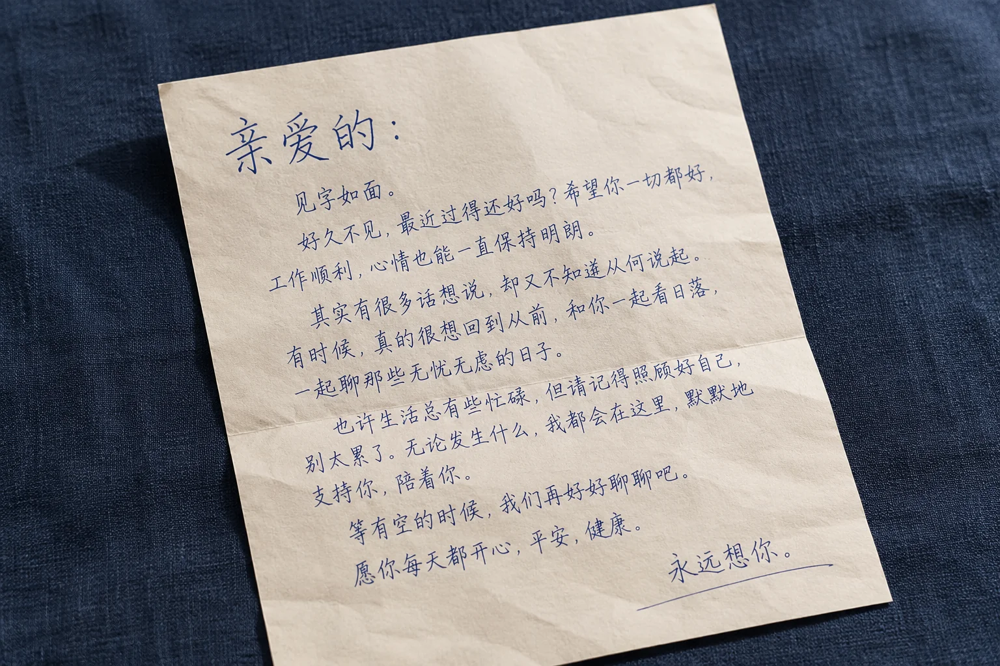

上海书信的抬头和正文写法不同，模仿笔迹参考要分开读
同一封信里，称呼可能写得较大，正文却紧凑许多。不同位置承担不同用途，不能只截一处就概括整页。

抬头不等于普通正文
上海模仿笔迹参考中的称呼、标题和正文，可能采用不同字号与留白。完整页能显示这些关系，局部图只能说明某处细节。阅读时先标明所在区域，再比较同类型内容，避免把标题中的大字与行中的小字直接当成相同条件下的变化。
布局变化也有语境
抬头后的空行、正文段落和落款之间的间隔，往往与书信格式有关。不能把每处空白都解释成稳定的个人习惯。多封同类书信可以一起查看，但原来页序与日期应保留；不同用途的便条、贺卡则可另建一组，减少不必要的混比。
署名保留完整关系
模仿签名、模仿签字的姓名局部，应能对应到正文结尾。日期、称谓和盖章位置会影响空间，裁图太紧就难以解释。不同文件的正文与落款不宜重新拼成一页，哪怕字号相近，也不能因此把它们当成同一份原始材料。
记录现象不急下结论
笔迹鉴定资料整理应说明各部分来源和是否完整。知道抬头、正文由谁书写时可记录，不能确认时不要因为出现在同一页便自行推定。把可核实背景与图像观察分开，后续比较才能清楚判断哪部分仍需要补充信息。